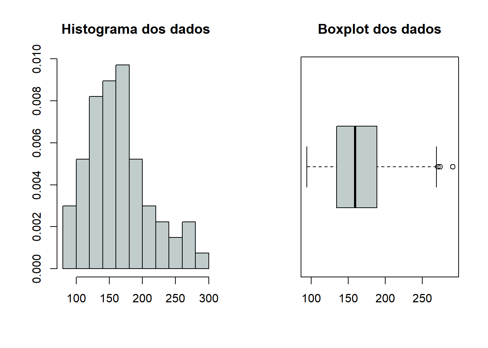
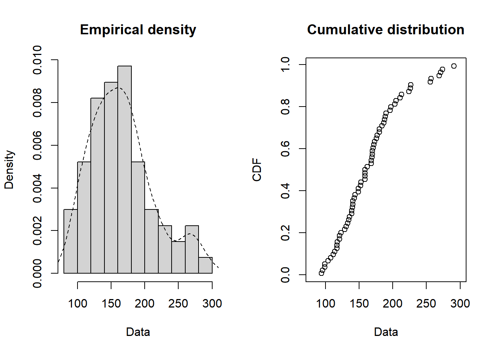

Ajuste de Modelos Probabilísticos e Aplicação de Testes Não Paramétricos
CC0291 - Estatística Não Paramétrica - Trabalho 01
Authors
Francisco Wilton Pereira Lima
Maurício Cândido Paluma
Romulo Barros de Freitas
Introdução
Métodos paramétricos são utilizados quando há o conhecimento prévio da distribuição populacional da variável de análise. Geralmente, supõe-se que ela tenha distribuição normal. Sendo comprovada a normalidade dos dados, pode-se, assim, utilizar-se de técnicas estatísticas como intervalos de confiança, e testes de hipóteses. Entretando, nem sempre essa suposição de normalidade é atendida, nesses casos, portanto, é fundamental a utilização de métodos não-paramétricos, os quais não requerem conhecimento prévio da distribuição dos dados.
Objetivos
Objetiva-se, com este trabalho ajustar alguns modelos probabilísticos contínuos a um conjunto de dados, e em seguida aplicar alguns testes não-paramétricos. Tais métodos foram estudados na disciplina Estatística Não Paramétrica do curso de Bacharelado em Estatística da Universidade Federal do Ceará.
Metodologia
O conjunto de dados utilizado neste relatório provém de um estudo conduzido por Barreto-Souza em 2009, bem como do trabalho de Morais e Cordeiro sobre a vida em fadiga, nos quais os valores foram arredondados para o milhar de ciclos mais próximo. Este estudo abrangeu 67 corpos de prova da Liga T7987, todos os quais falharam antes de atingir 300 mil ciclos de teste.
Para iniciar a análise, realizou-se um estudo descritivo com o objetivo de formular hipóteses iniciais. Isso envolveu a exploração das características principais dos dados, tais como a média e a variância, bem como a representação da dispersão dos valores em um gráfico, a fim de visualizar uma curva que resumisse os dados.
Posteriormente, foram realizados cinco testes não paramétricos, com o propósito de identificar qual distribuição é capaz de resumir melhor os dados. Esses testes incluíram o teste de Lilliefors, o teste de Shapiro-Wilk, o teste de Kolmogorov, o teste de Cramér–von Mises e o teste Anderson-Darling. É importante destacar que toda a análise dos dados e aplicação dos teste foi realizada atráves do software gratuito conhecido como R, disponível para download no endereço https://www.r-project.org/.
Descrição dos testes que serão utilizados
Teste de Lilliefors
O teste de Lilliefors é uma variação do Teste de Kolmogorov-Smirnov e é usado para verificar se uma amostra de dados segue uma distribuição de normal. É particularmente útil quando você tem uma pequena amostra de dados e não sabe os parâmetros da distribuição teórica, uma vez que esses parâmetros são estimados a partir dos próprios dados. Como os outros testes, ele compara a distribuição acumulada empírica com a distribuição acumulada teórica e, se o valor-p for menor que o nível de significância escolhido, a hipótese nula (normalidade dos dados) é rejeitada.
Teste de Shapiro-Wilk
Assim como o teste de Liliefors, o teste de Shapiro-Wilk é usado para verificar se uma amostra de dados segue uma distribuição normal. Ele é especialmente sensível a desvios da normalidade na cauda da distribuição e é amplamente utilizado quando se suspeita que os dados não são normalmente distribuídos. A hipótese nula \(H_{0}\) do teste afirma que os dados são normalmente distribuídos. Se o valor-p resultante for menor que um nível de significância previamente escolhido, a hipótese nula é rejeitada, indicando que os dados não seguem uma distribuição normal.
Teste de Kolmogorov-Smirnov
O teste de Kolmogorov-Smirnov é usado para verificar se uma amostra de dados segue uma distribuição especifica. Ele compara a distribuição acumulada empírica dos dados com a distribuição acumulada teórica da distribuição especificada. A hipótese nula \(H_{0}\) afirma que os dados seguem a distribuição especificada. Se o valor-p for menor que o nível de significância escolhido, a hipótese nula é rejeitada.
Teste de Cramér-von Mises
O Teste de Cramér-von Mises é uma variação do Teste de Kolmogorov-Smirnov e é usado para verificar se uma amostra de dados segue uma distribuição de probabilidade específica. Ele também se baseia na comparação entre a distribuição acumulada empírica e a distribuição acumulada teórica. O teste Cramér-Von mises é mais sensível a diferenças na cauda da distribuição do que o Teste de Kolmogorov-Smirnov.
Teste de Anderson-Darling
O Teste Anderson-Darling, assim como o teste de Kolmogorov-Smirnov e o teste de Crámer-von Mises, verifica se uma amostra de dados segue uma distribuição específica com parâmetros pré-estabelecidos, estes podem ser estimados por meio de máxima-verossimilhança ou mínimos quadrados, por exemplo. Este teste é uma extensão do Teste de Cramér-von Mises e é especialmente útil quando se deseja verificar a normalidade dos dados. A hipótese nula \(H_{0}\) afirma que os dados seguem a distribuição especificada. Se o valor-p for menor que o nível de significância escolhido, a hipótese nula é rejeitada.
A distribuição Weibull é uma distribuição de probabilidade contínua amplamente utilizada para modelar a vida útil de produtos, sistemas e fenômenos em que a taxa de falha não é constante ao longo do tempo. Ela é versátil e pode se ajustar a uma variedade de formas de curvas de falha, tornando-a útil em engenharia, confiabilidade e análise de sobrevivência.
A distribuição Gama é usada para modelar uma variedade de fenômenos, incluindo o tempo de espera até a ocorrência de eventos, como o tempo de espera em uma fila, o tempo de entrega de produtos, entre outros. Ela possui dois parâmetros: o “parâmetro de forma”, denotado como \(\alpha\) ou \(k\), e o “parâmetro de escala” denotado como \(\beta\). A distribuição Gama é frequentemente utilizada para modelar dados positivos e contínuos e pode se assemelhar a uma variedade de formas, dependendo dos valores de seus parâmetros.
A distribuição Log-normal é usada para modelar variáveis aleatórias que são positivas e não podem assumir valores negativos, como preços de ações, rendimentos de investimentos e tamanhos de partículas em sistemas físicos. Ela é chamada de “log-normal” porque o logaritmo natural das variáveis segue uma distribuição normal. A distribuição Log-normal possui dois parâmetros: a média do logaritmo, denotada como \(\mu\) e o desvio padrão do logaritmo, denotado como \(\sigma\). Ela é frequentemente usada em análises financeiras e em situações em que os dados têm uma assimetria positiva (inclinação à direita) quando representados em escala linear.
Pacotes
Ver código
library(bookdown)library(rmarkdown)library(e1071)library(dplyr)library(nortest)library(extraDistr) # outras distribuicoeslibrary(goftest) # teste de anderson-darling e cramer-von miseslibrary(fitdistrplus) # estimação dos parâmetroslibrary(knitr)library(htmltools)library(kableExtra)library(fitdistrplus)library(flexsurv)library(survival)
Ao calcularmos as medidas descritivas do conjunto de dados, obtemos uma média de 166, 0746 e um desvio padrão de 46, 7246. Além disso, a assimetria calculada foi de 0,7320, indicando que os dados são assimétricos à direita, ou seja, a maior quantidade das observações estão concentraddas à esquerda do valor médio. Em relação à curtose, o valor calculado foi de 0,04423747, indicando que a distribuição dos dados é aproximadamente mesocúrtica, ou seja, sua forma é semelhante à distribuição normal.
Abaixo, são apresentadas duas ferramentas gráficas, histograma e boxplot, respectivamente, que auxiliam na análise visual da disperção do conjunto de dados. No boxplot, por exemplo, é possível notar a presença de outliers superiores, que são valores que estão distantes da média observada.
Entretanto, não é possível afirmar a distribuição populacional da qual nossos dados são oriundos apenas através da análise gráfica ou do cálculo de medidas de assimetria ou de curtose, para isso, se faz necessário a aplicação de alguns testes estatísticos.
Ver código
par(mfrow =c(1, 2))hist(dados, freq = F, main ='Histograma dos dados', col ='azure3',xlab ='', ylab ='')boxplot(dados, main ='Boxplot dos dados', col ='azure3', horizontal = T)

Ajuste dos Modelos Probabilísticos
Ver código
plotdist(dados, histo =TRUE, demp =TRUE)

Inicialmente, foram estimados os parâmetros de forma e escala e da distribuição Weibull:
Cramer-von Mises test of goodness-of-fit
Braun's adjustment using 8 groups
Null hypothesis: Weibull distribution
with parameters shape = 3.726646, scale = 183.66084
Parameters assumed to have been estimated from data
data: dados
omega2max = 0.25558, p-value = 0.799
Cramer-von Mises test of goodness-of-fit
Braun's adjustment using 8 groups
Null hypothesis: Gamma distribution
with parameters shape = 13.53455307, rate = 0.08149576
Parameters assumed to have been estimated from data
data: dados
omega2max = 0.4318, p-value = 0.3754
Cramer-von Mises test of goodness-of-fit
Braun's adjustment using 8 groups
Null hypothesis: log-normal distribution
with parameters meanlog = 5.0750509, sdlog = 0.2722465
Parameters assumed to have been estimated from data
data: dados
omega2max = 0.34302, p-value = 0.5742
Cramer-von Mises test of goodness-of-fit
Braun's adjustment using 8 groups
Null hypothesis: Normal distribution
with parameters mean = 166.074626865672, sd = 46.724632862619
Parameters assumed to have been estimated from data
data: dados
omega2max = 0.28869, p-value = 0.7142
Teste de Anderson-Darling
Ver código
# teste de anderson-darlinggoftest::ad.test(x = dados, null ="pweibull", shape =3.726646, scale =183.660840, estimated =TRUE)
Anderson-Darling test of goodness-of-fit
Braun's adjustment using 8 groups
Null hypothesis: Weibull distribution
with parameters shape = 3.726646, scale = 183.66084
Parameters assumed to have been estimated from data
data: dados
Anmax = 1.2649, p-value = 0.8924
Anderson-Darling test of goodness-of-fit
Braun's adjustment using 8 groups
Null hypothesis: Gamma distribution
with parameters shape = 13.53455307, scale = 0.08149576
Parameters assumed to have been estimated from data
data: dados
Anmax = Inf, p-value = 0.0005332
Anderson-Darling test of goodness-of-fit
Braun's adjustment using 8 groups
Null hypothesis: log-normal distribution
with parameters meanlog = 5.0750509, sdlog = 0.2722465
Parameters assumed to have been estimated from data
data: dados
Anmax = 1.2013, p-value = 0.9157
Cramer-von Mises test of goodness-of-fit
Braun's adjustment using 8 groups
Null hypothesis: Normal distribution
with parameters mean = 166.074626865672, sd = 46.724632862619
Parameters assumed to have been estimated from data
data: dados
omega2max = 0.43348, p-value = 0.3736
Conclusões
Testes de Normalidade
Quando aplicamos o teste de Lilliefors, obtemos um p-valor = 0,2797, ou seja, para níveis de confiança usuais como 1%, 5% ou 10% o teste sugere a não rejeição da hipótese nula de que os dados seguem distribuição normal. Entretanto, quando aplicamos o teste de Shapiro-Wilk obtemos um p-valor = 0,007059, ou seja, ele nos sujere a rejeição da hipótese nula de normalidade dos dados. Portanto, dada a maior robustez do teste de Shapiro-Wilk optou-se por rejeitar a hipótese de que os dados seguem uma distribuição normal. Ademais, o teste de Lilliefors é normalmente aplicado em conjunto de dados com menos de 50 observações, no nosso caso, nosso tamanho amostral é 67.
Kolmogorov-Smirnov
Weibull
Gama
Log-Normal
p-valor | Sob\(H_{0}\)
0,5512
0,9901
0,9972
Cramér–von Mises
Weibull
Gamma
Log-Normal
p-valor | Sob\(H_{0}\)
0,6572
0,5666
0,5093
Teste de Anderson-Darling
Weibull
Gamma
Log-Normal
p-valor | Sob\(H_{0}\)
0,4658
0.0005332
0.9731
Os três testes não rejeitaram a hipótese nula de que os dados se ajustavam a uma distribuição Weibull com os parâmetros estimados;
O teste de Kolmogorov-Smirnov e o teste de Crámer-von Mises não rejeitaram a hipótese de que os dados seguiam uma distribuição Gama com os parâmetros estimados, entretanto, o teste de Anderson-Darling rejeitou a hipótese de que os dados seguiam uma distribuição Gama com os parâmetros estimados;
Os três testes não rejeitaram a hipótese nula de que os dados se ajustavam a uma distribuição Log-Normal com os parâmetros estimados, além disso, em média, foi a que apresentou os maiores níveis descritivos. Portanto, de acordo com a análise realizada e os testes aplicados, o modelo Log-Normal foi o que melhor se ajustou ao conjunto de dados.
É importante salientar que as três distribuições citadas acima, se ajustaram de forma significante aos nossos dados, especialmente a distribuição Weibull e a distribuição Log-Normal.